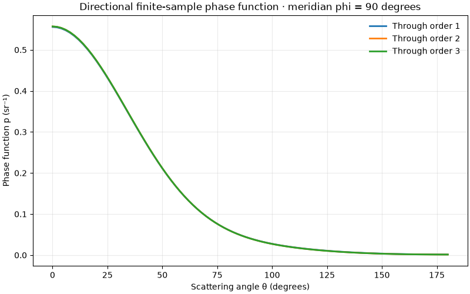

Note
Go to the end to download the full example code.
A dielectric sphere in a homogeneous background#
Define a finite three-dimensional refractive index field directly rather than drawing
it from homogeneous random statistics. The sphere has a constant refractive index
inside and is surrounded by a uniform background. The fluctuation array
stores n(r) - background_refractive_index: zero outside the sphere, a constant
contrast inside. The scattering problem’s background extends beyond the
voxel box; the box is not an additional material boundary.
The voxel mask approximates a curved interface with a staircase boundary.
Refine the spacing at fixed sphere radius and check the calculated curves
before interpreting them quantitatively. BornSim uses the linearized
dielectric contrast 2 * n0 * delta_n at all Born orders, rather than
n_sphere**2 - n0**2. This weak-contrast example is not an exact Mie solution.
import sys
import matplotlib.pyplot as plt
from bornsim import Material, AngularSampling, Grid, Solver, Source, Sphere, StructuredMedium
from bornsim.units import ureg
Build a spherical refractive index mask#
Use voxel-centre coordinates measured from the box centre. The background refractive index is 1.33 and the sphere refractive index is 1.34. A 150 nm radius fits inside a 480 nm box; no random statistics or generation seed are needed. The sphere is offset by 40 nm in x and 20 nm in y. Set this vector to zero for a centred sphere. Keep abs(centre[a]) + radius below half the box size on every axis to avoid clipping. Grid-aligned offsets translate the same mask.
grid = Grid(
shape=(24, 24, 24),
spacing=20 * ureg.nanometer,
)
sampling = AngularSampling(
start=0 * ureg.degree,
end=180 * ureg.degree,
n_points=91,
polar_samples=32,
azimuth_samples=16,
)
structure = StructuredMedium()
background = Material(refractive_index=1.33)
sphere_material = Material(refractive_index=1.34)
structure.add_background(material=background)
sphere = Sphere(
radius=150 * ureg.nanometer,
material=sphere_material,
centre=[40, 20, 0] * ureg.nanometer,
)
structure.add_structures(
sphere,
)
sphere = Sphere(
radius=150 * ureg.nanometer,
material=sphere_material,
centre=[-100, 00, -20] * ureg.nanometer,
)
structure.add_structures(
sphere,
)
volume = structure.to_volume(
grid=grid,
)
Inspect the medium in 3D#
Inspect the actual finite input sample with physical spatial axes. The gallery embeds an interactive volume; drag to rotate and scroll to zoom. Level surfaces interpolate the sampled staircase interface.
medium_figure = volume.plot_3d(
mode="volume",
field="refractive_index",
opacity_scale="increasing",
)
if "--no-browser" not in sys.argv:
medium_figure.show(renderer="browser")
Compute coherent scattering through three Born orders#
A single-volume result reports differential scattering as a cross section divided by the entire voxel-box volume. Multiplying by that physical volume recovers a differential cross section, which avoids treating the empty background portion of the box as part of an intrinsic transport coefficient.
Three-dimensional phase function#
The solve above sampled the fixed volume over output directions and separate integration nodes. It supplies the solid-angle normalization directly. The normalized surface retains each azimuth, including interference between structures. Its radius is a probability density per steradian, not a spatial coordinate. No realization or azimuth averaging is applied to the 3D view. Check polar and azimuth quadrature refinement for quantitative calculations.
phase_figure = result.plot_phase_function(
view="3d",
)
if "--no-browser" not in sys.argv:
phase_figure.show(renderer="browser")
Select a physical meridian#
Select the sampled phi = 90 degree plane without averaging or interpolation. The curve keeps the full solve’s solid-angle normalization.
meridian = result.meridian(azimuth=90 * ureg.degree)
meridian.plot_phase_function()
plt.show()

Total running time of the script: (0 minutes 2.949 seconds)